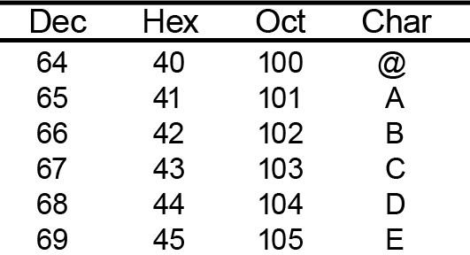

Fluxos i fitxers
Per poder dur a terme operacions d’entrada i de sortida, de manera que sigui possible llegir o escriure dades, el Java disposa d’un mecanisme unificat, independent de l’origen o la destinació de les dades: els fluxos (stream). Aquest sistema no és exclusiu del Java, sinó que està suportat en altres llenguatges també, perquè es tracta en realitat d’una funcionalitat dels sistemes operatius. Aquest apartat se centrarà en l’ús de fluxos per al cas de l’accés a dades dins fitxers, en ser el més senzill i intuïtiu. Ara bé, cal tenir present que el mecanisme de fluxos no està vinculat exclusivament a interaccions amb el sistema de fitxers, sinó que és extrapolable a qualsevol operació en què s’efectuen operacions de lectura o d’escriptura seqüencial de dades. Per exemple, operacions amb buffers de memòria o comunicacions en xarxa.
Un flux (stream) és el terme abstracte usat per referir-se al mecanisme que permet a un conjunt de dades seqüencials transmetre’s des d’un origen de dades (data source) a una destinació de dades (data sink).
Des del punt de vista de l’aplicació, es poden generar dos tipus de fluxos: d’entrada i de sortida. Els fluxos d’entrada serveixen per llegir dades des d’un origen (per exemple, seria el cas de llegir un fitxer), per tal de ser processades, mentre que els de sortida són els responsables d’enviar les dades a una destinació (per a un fitxer, seria el cas d’escriure-hi). La figura resumeix com una aplicació transmet o rep dades mitjançant fluxos.
FIFO són les inicials de first in first out (primer a entrar, primer a sortir).
L’aspecte més important del funcionament dels fluxos és que les dades sempre es transmeten i es processen seqüencialment. En el cas dels fluxos de lectura, això vol dir que un cop s’ha llegit un conjunt de dades, ja no és possible tornar enrere per llegir-lo de nou. En el cas dels fluxos d’escriptura, aquest fet implica que les dades s’escriuen, en la destinació, exactament en el mateix ordre que es transmeten, no es poden fer salts. Aquest comportament seqüencial també fa que l’ordre en què es llegeixen les dades d’un origen sigui sempre exactament el mateix que l’ordre en què es van escriure en el seu moment. El primer byte que es llegeix és el primer que es va escriure, després el segon… Tot el sistema es comporta sempre com una estructura FIFO. La figura mostra un esquema d’aquest fet.
- Un flux de dades és com un tub, on, en lloc d'aigua, es transmeten dades entre dos extrems. Un cop passa l'aigua, ja no es pot fer enrere.
Dins el Java, hi ha dos tipus de flux. D’una banda, hi ha els fluxos orientats a dades, que són aquells en què les dades que es transmeten són purament binàries, amb una interpretació totalment dependent de l’aplicació. D’altra banda, hi ha els fluxos orientats a caràcter, en què les dades processades sempre es poden interpretar com a text. Tot i que estrictament es pot considerar que els segons són més aviat un subconjunt dels primers, ja que en ordinador, en darrera instància, sempre s’acaba representant tot en cadenes de bytes, fer aquesta diferenciació val la pena per entendre algunes de les particularitats del sistema de fluxos que proporciona el Java. Un exemple d’aquestes particularitats és que mentre que els primers operen sempre amb el tipus primitiu byte, els segons ho fan amb el tipus char.
Totes les classes vinculades a l’entrada/sortida en Java es troben definides dins el package java.io. Dins aquest mateix paquet també es defineix el tipus d’excepció vinculada a errors sorgits durant el procés de lectura i escriptura de dades: IOException. Pràcticament tots els mètodes més importants poden generar aquesta excepció, per la qual cosa és imprescindible capturar-la. Complementant IOException, també hi ha definit un gran nombre de subclasses que aporten informació més concreta sobre l’error que ha tingut lloc.
Gestió de fitxers
Abans d’aprofundir en el funcionament dels fluxos de dades, val la pena veure com es gestiona el sistema de fitxers, ja que en la majoria de casos els fluxos s’utilitzaran per accedir-hi. Dins la biblioteca java.io, la classe que representa un fitxer a Java és File. Aquesta permet al desenvolupador manipular qualsevol aspecte vinculat al sistema de fitxers. Es pot usar tant per manipular fitxers de dades com directoris.
La classe File indica, més concretament, una ruta dins el sistema de fitxers.
Si bé disposa de diversos constructors, el més típicament usat és:
public File (String ruta)
El format de la ruta
Cal tenir sempre present que el format que ha de tenir la cadena de text que conforma la ruta pot ser diferent segons el sistema operatiu sobre el qual s’executa l’aplicació. Per exemple, el Windows inicia les rutes per un nom d’unitat (C:, D:, etc.), mentre que l’Unix sempre usa una barra (”/”). A més a més, els diferents sistemes operatius usen diferents separadors dins les rutes. Per exemple, l’Unix usa la barra (”/”) mentre que el Windows la contrabarra (“\”).
Ruta Unix: /usr/bin
Ruta Windows: C:\Windows\System32
Per generar aplicacions portables a diferents sistemes, la classe File ofereix una constant que és recomanable usar per especificar separadors de ruta dins una cadena de text: File.separator. Aquesta sempre pren la forma adequada d’acord amb el sistema operatiu en què s’estigui executant l’aplicació en aquell moment.
De fet, en sistemes Windows cal ser especialment acurat amb aquest fet, ja que la contrabarra no és un caràcter permès dins una cadena de text, en servir per declarar valors especials d’escapament (\n salt de línia, \t tabulador, etc.).
Un altre aspecte molt important que també cal tenir sempre present és si el sistema operatiu distingeix entre majúscules i minúscules o no. El Java és totalment neutral en aquest aspecte, actuant tal com especifiqui el sistema operatiu.
L’element final de la ruta pot existir realment o no, però això no impedeix de cap manera poder instanciar File. Les seves instàncies es comporten com una declaració d’intencions sobre quina ruta del sistema de fitxers es vol interactuar. No és fins que es criden els diferents mètodes definits a File , o fins que es s’hi escriuen o llegeixen dades, que realment s’accedeix al sistema de fitxers i es processa la informació. Si s’intenten llegir dades des d’una ruta que en realitat no existeix, es produeix un error, i es llança una FileNotFoundException.
La classe File ofereix tot un seguit de mètodes que permeten realitzar operacions amb la ruta especificada. Alguns dels més significatius per entendre’n les funcionalitats són:
public boolean exists(). Indica si la ruta especificada realment existeix en el sistema de fitxers.public boolean isFile()/isDirectory(). Aquests dos mètodes serveixen per identificar si la ruta correspon a un fitxer, o bé a un directori.
Els mètodes següents només es poden cridar sobre rutes que especifiquen fitxers o, en cas contrari, no faran res:
public long length(). Retorna la mida del fitxer.public boolean createNewFile(). Crea un nou fitxer buit en aquesta ruta, si encara no existeix. Retorna si l’operació ha tingut èxit.
Gestionant el sistema de fitxers
Per exemple, suposem que es vol crear un nou fitxer, sempre que aquest encara no existeixi. El codi que realitzaria aquesta acció seria:
El fitxer no es crea realment en el sistema de fitxers fins a executar el mètode createNewFile. Fins llavors, l’objecte referenciat per file només indica una ruta dins el sistema de fitxers amb la qual es pot operar, però no un fitxer real.
En contraposició, els mètodes següents només es poden cridar sobre rutes que especifiquen directoris:
public boolean mkdir(). Crea el directori, si no encara existeix. Retorna si l’operació ha tingut èxit.public String[] list(). En retorna el contingut en forma d’array de cadenes de text.public String[] list(FilenameFilter filter). Mitjançant el paràmetre addicional filter, és possible filtrar el resultat, de manera que només es retorna el conjunt de fitxers i directoris que compleixen certs criteris.FilenameFilterés una interface, per la qual cosa és responsabilitat del desenvolupador proporcionar la implementació adequada d’acord amb les condicions en les quals es vol llistar el contingut del directori. Només té un mètode:boolean accept(File dir, String name). Cada cop que es crida el mètode list(), aquest crida internament accept per cada fitxer o directori contingut. El paràmetre dir indica el directori en què està ubicat el fitxer o directori processat, mentre que name n’indica el nom. Retorna cert o fals segons si es vol, o no, que sigui inclòs en la llista retornada per la crida al mètode list().
Llistant fitxers .png
Un exemple de com s’usa un FilenameFilter per llistar fitxers amb una extensió concreta dins un directori podria ser:
Fixeu-vos que en aquest exemple s’ha usat una classe anònima per definir el filtre. Atès que els filtres no se solen reusar molt dins el codi, és un altre cas en què val la pena usar classes anònimes.
Fluxos orientats a dades
El Java ofereix un sistema d’accés homogeni al mecanisme de fluxos orientats a dades mitjançat, per descomptat, una jerarquia de classes.
Les superclasses InputStream i OutputStream especifiquen els mètodes relatius al comportament comú a qualsevol flux, i cada subclasse s’encarrega llavors de sobreescriure’ls, o afegir-ne de nous, segons les seves particularitats. Tots els fluxos a Java hereten d’alguna d’aquestes dues classes.
El fet de que tots els fluxos a Java hereten alguna de les superclasses InputStream i OutputStream té sentit, ja que, per exemple, independentment del format de l’origen de les dades, sempre hi ha l’opció de llegir, però les tasques que cal fer internament per a això són totalment diferents segons l’origen de dades concret. No és el mateix llegir d’un fitxer que d’un buffer de memòria. Hi ha una subclasse per cada tipus d’origen o destinació de dades.
La classe InputStream ofereix els mètodes descrits a continuació per llegir dades des de l’origen mitjançant un flux d’entrada. Un aspecte a destacar és que en una operació de lectura mai no es pot garantir quants bytes es llegiran realment, independentment que es conegui per endavant el nombre de bytes disponibles a l’origen (i, per tant, a priori, es pugui suposar aquesta garantia). Sempre cal crear algoritmes que tinguin en compte el valor de retorn dels diferents mètodes:
- int available(). Retorna tots els bytes que hi ha en el flux pendents de ser llegits. En un fitxer, seria el nombre de bytes que ocupa i encara no s’han processat.
- int read(). Llegeix exactament un byte. Aquest mètode retorna un enter, ja que fa ús del valor de retorn -1 per indicar que ja no queden més dades per llegir en l’origen. Per obtenir realment el byte llegit cal fer un cast del valor retornat sobre una variable de tipus byte.
- int read(byte[] b). Intenta llegir tants bytes com la longitud de l’array passat com a paràmetre, on els emmagatzema a partir de l’índex 0. Retorna el nombre de bytes llegits realment. Cal tenir molt present que si s’ha llegit un nombre de bytes N, inferior a
b.length, les dades emmagatzemades entreNib.length - 1no són vàlides, ja que no corresponen a la lectura. Retorna -1 si no queden més dades per llegir en l’origen. - int read (byte[] b, int offset, int len). Intenta llegir len bytes, que emmagatzema dins de l’array
ba partir de l’índex indicat pel valoroffset. Com en el cas anterior, retorna el nombre real de bytes llegits i -1 si no queden més dades per llegir en l’origen.
Al mateix temps, la classe OutputStream ofereix els mètodes complementaris per escriure dades cap al destinació mitjançant un flux de sortida:
- void write(int b). Escriu exactament un byte.
- void write(byte[] b). Escriu tots els bytes emmagatzemats a
b, de manera ordenada des de l’índex 0 ab.length - 1. - void write (byte[] b, int offset, int len). Escriu tots els bytes emmagatzemats a
b, de manera ordenada des de l’índexoffsetaoffset + length - 1.
Flush
La traducció literal de “flush” és “tirar de la cadena”. Una manera molt explícita de dir que es fa net al flux, i una nova referència a l’analogia entre un flux i un tub.
Quan les operacions de lectura o escriptura sobre un flux han finalitzat, és imprescindible tancar-lo. En fer-ho, s’informa el sistema operatiu que ja no s’hi vol realitzar cap operació més i que pot alliberar tot un seguit de recursos que li ha calgut reservar prèviament per gestionar el flux. En el cas dels fluxos de sortida, tancar-lo també serveix per forçar l’escriptura real de les dades cap a la destinació, el que s’anomena fer un flush.
Per tancar qualsevol flux de dades es disposa del mètode close().
En els sistemes operatius moderns, les escriptures són asíncrones. Això vol dir que no es pot garantir que en el mateix instant en què es fa un write, les dades realment s’hagin enviat a la destinació. Hi pot haver un retard, més o menys llarg. Només en tancar un flux es pot garantir que absolutament qualsevol dada escrita ja es troba realment a la destinació. Això implica que es pot donar el cas que durant el procés d’escriptura en un fitxer, immediatament després de retornar d’una crida a un mètode write s’obri el fitxer per veure’n el contingut (per exemple, amb un editor), però tot i així, les dades encara no hi siguin.
Origen i destinació en fitxers
Dins la jerarquia de fluxos orientats a dades, les classes responsables de crear fluxos vinculats a fitxers, aquestes són les classes FileInputStream (per lectura, origen) i FileOutputStream (per escriptura, destinació). Aquestes dues classes no afegeixen gaires mètodes addicionals respecte als definits per InputStream i OutputStream. Ambdues disposen de constructors que tenen com a paràmetre d’entrada o bé una instància de File, o directament una cadena de text amb la ruta del fitxer:
Sempre que es genera un flux de sortida sobre un fitxer ja existent, aquest se sobreescriu, de manera que es perden absolutament totes les dades emmagatzemades anteriorment. L’única excepció d’aquest comportament són els constructors amb el paràmetre append. Aquest permet indicar, si es crida amb el valor true, que es volen concatenar les dades tot just a partir del final del fitxer actual.
Còpia d'un fitxer
Com exemple del funcionament dels fluxos orientats a dades vinculats a fitxers, a continuació es mostra el fragment de codi que realitzaria una còpia del fitxer ubicat a ruta, escrivint-lo a novaRuta exactament igual. En l’exemple, les dades es llegeixen en blocs de 100 bytes consecutius, si bé cal tenir molt present que mai es pot donar per garantit el nombre de bytes llegits realment en una crida del mètode read. Per aquest motiu, és imprescindible controlar que només s’escrigui a la destinació exactament el mateix nombre de bytes que s’ha llegit.
IOException
En operar amb fluxos, és imprescindible capturar les possibles excepcions en el procés d’entrada/sortida.
Origen i destinació en buffers de memòria
Un altre parell de classes molt útils quan es processen dades mitjançant fluxos són les relatives a orígens i destinacions de dades vinculats a buffers de memòria dinàmics: ByteArrayInputStream i ByteArrayOutputStream.
En el cas del flux d’entrada, permet llegir dades des d’un array de bytes (byte[]) seqüencialment, en lloc d’haver d’accedir per índex. Per aquest motiu, en el seu constructor cal indicar quin és l’array origen de les dades:
- ByteArrayInputStream(byte[] buf). En el cas del flux de sortida, les dades escrites s’emmagatzemen en un bloc indeterminat de la memòria del programa, que augmenta la mida dinàmicament a mesura que s’escriuen noves dades. No hi ha cap límit excepte la memòria física de l’ordinador, si bé es recomana no usar-los per a quantitats molt grans de dades. Un cop ha finalitzat l’escriptura, és possible obtenir totes les dades emmagatzemades mitjançant el mètode específic:
- byte[] toByteArray(). En la posició 0 de l’array hi ha el primer byte escrit en el flux, i així successivament fins a trobar el darrer escrit en la posició
length - 1.
Canviant la destinació o l'origen de les dades
Per observar els avantatges que ofereix l’abstracció mitjançant fluxos, suposem que es vol canviar la destinació de les dades del tros de codi que serveix per copiar un fitxer i, en lloc d’un fitxer, es vol escriure sobre un buffer de memòria dinàmic. En aquest cas, l’única modificació en el fragment de codi seria, en crear el flux de sortida a la segona línia, simplement instanciar ByteArrayOutputStream classe en lloc de FileOutputStream. La resta del codi queda exactament igual. Passa el mateix si es canvia l’origen.
El codi següent escriuria un array de bytes en un fitxer:
El codi següent llegiria el contingut en un array de bytes:
Per tant, el codi del mètode copiaDades es manté exactament igual. Amb aquest sistema, el processament de les dades és absolutament transparent en el seu origen o destinació real. I un cop més, tot plegat gràcies a l’aplicació correcta del polimorfisme.
Fluxos orientats a caràcter
La particularitat principal dels fluxos orientats a caràcter, en contraposició amb els orientats a dades, és que els mètodes de les seves classes operen amb el tipus primitiu char en lloc de byte. La decisió de crear un subconjunt de classes amb aquesta propietat no va ser arbitrària, i depèn d’un seguit de motius de pes.
En menor mesura, al contrari que amb els bytes, hi ha caràcters amb un cert significat especial. Saber que les dades que s’estan transmetent són caràcters permet processar-les correctament i poder detectar ubicacions concretes dins els text. El cas més clar d’aquest fet és el salt de línia, que permet distingir entre línies diferents dins un text.
ASCII és l’acrònim d’american standard code for information interchange (codi estàndard americà per a l’intercanvi d’informació).
En major mesura, la diferenciació entre bytes i caràcters permet la internacionalització d’aplicacions. Tradicionalment, el sistema per codificar caràcters ha estat, i en moltes aplicacions encara ho és, el sistema ASCII, formalitzat inicialment l’any 1963, que es basa en caràcters d’un sol byte. Aquest sistema conforma una taula en què a cada valor possible representable amb un byte s’assigna un caràcter concret (per exemple, la A majúscula es representa amb el valor hexadecimal 41).
- 
- Part de la taula ASCII.
A pesar de l’enorme acceptació, aquest sistema té un problema molt important: es basa totalment en l’alfabet llatí i, encara més concretament, en el llenguatge anglès. Per tant, qualsevol llenguatge no representable en aquest alfabet no es pot representar en ASCII: grec, rus, pràcticament totes les llengües orientals, etc. En aquests països es van desenvolupar altres sistemes de codificació totalment incompatibles amb l’ASCII, en assignar a un byte determinat una simbologia diferent, cosa que feia molt complicat fer aplicacions fàcilment portables independentment de l’idioma del sistema en què s’executi. Per resoldre aquest problema es va crear la codificació Unicode al final de la dècada dels vuitanta. Aquesta codificació es basa en 16 bits i és capaç d’englobar una gran quantitat d’alfabets. Per permetre la retrocompatibilitat amb el codi ASCII, els valors Unicode 0 0000-0 007F, quan el byte de més pes és 0, es corresponen exactament amb els valors definits per ASCII. La figura mostra un bocí de la seva gran taula, en aquest cas per caràcters japonesos.
El Java es basa totalment en l’Unicode, els tipus primitius char ocupen 2 bytes, cosa que permet que una aplicació Java s’executi sobre qualsevol plataforma, independentment de l’idioma. Novament, es pot veure com el Java es va crear pensant en Internet.
Les classes Reader i Writer representen les superclasses associades a fluxos orientats a caràcter. Sempre que es treballa amb caràcters cal usar la seva jerarquia de classes.
La filosofia dels fluxos orientats a caràcter és exactament igual que en els fluxos orientats a dades, i només canvia tota ocurrència de byte a char.
Per cada origen o destinació de dades també hi ha una classe concreta, FileReader i FileWriter per processar fitxers. Fins i tot el nombre, nom i format dels mètodes són idèntics (write, read).
Còpia de fitxers de text
Les diferències de la còpia de fitxers de text són mínimes respecte a la manera d’operar dels fluxos orientats a dades.
De manera homònima als fluxos relatius a buffers de memòria, també hi ha classes per gestionar buffers de caràcters: CharArrayReader i CharArrayWriter. En aquest cas, el constructor del flux d’entrada té com a paràmetre una variable de tipus char[] i el de sortida permet obtenir les dades emmagatzemades usant el mètode toCharArray().
Modificadors de fluxos
Hi ha situacions en les quals haver de processar qualsevol informació binària directament a un nivell tan baix com de byte o de caràcter pot ser una feina pesada per al desenvolupador. Suposem que es vol emmagatzemar un valor enter, un tipus primitiu int. Amb el funcionament per defecte dels fluxos orientats a dades, això implica haver de fer un conjunt de tasques prèvies abans que no es pugui escriure realment: conèixer la mida exacta d’un enter en Java (32 bits), dividir-lo d’alguna manera en bytes independents, i tot seguit escriure’l com una cadena de bytes. Llavors, en llegir-lo, cal fer el procés invers.
Per a casos com aquest, en què les dades requereixen una transformació, la biblioteca java.io proporciona un conjunt de classes anomenadesmodificadores.
Una classe modificadora d’un flux altera el seu funcionament per defecte, i proporciona mètodes addicionals que permeten el pre-procés de dades complexes abans d’escriure o llegir-les del flux. Aquest preprocés el realitza de manera transparent el desenvolupador.
La figura mostra un esquema del comportament d’aquestes classes partint de la problemàtica exposada a l’inici. El que vol el desenvolupador és simplement poder disposar d’un mecanisme per escriure enters en el flux, i deixar-lo que s’encarregui de totes les transformacions necessàries per convertir-lo en una cadena de bytes.
Les classes modificadores més significatives són els fluxos de tipus de dades, els fluxos amb buffer intermedi, la sortida amb format, la compressió de dades, la transformació del flux orientat a caràcter de dades i la lectura per línies. En tots els casos, el seus constructors tenen com a paràmetre el flux que es vol modificar.
Fluxos de tipus de dades
Les classes DataInputStream i DataOutputStream serveixen per resoldre exactament el problema proposat a l’inici d’aquest apartat. Proporcionen un seguit de mètodes addicionals que permeten escriure directament tipus primitius sense que el desenvolupador s’hagi de preocupar de com cal codificar-los en bytes:
void writeInt(int i)int readInt()void writeBoolean(boolean b)boolean readBoolean()void writeDouble(double d)double readDouble()- etc.
Escriptura i lectura de tipus primitius
Un exemple d’utilització d’aquest modificador, en què s’escriu directament un valor enter, seria:
En usar aquest tipus de flux cal anar amb molt de compte de llegir dades en exactament l’ordre invers en què s’han escrit, ja que en cas contrari el programa serà erroni. Així, doncs, per llegir el fitxer anterior correctament cal fer:
Fluxos amb buffer intermedi
La classe BufferedInputStream proporciona la capacitat de disposar d’un buffer de memòria intermedi entre l’aplicació i un flux d’entrada orientat a dades. A efectes pràctics, això significa que permet tornar enrera en qualsevol moment de la lectura o l’escriptura, al contrari del que normalment es permet. Per assolir aquesta fita, disposa de mètodes addicionals:
- void mark(int limit). Marca una posició del flux. La posició marcada es conserva sempre que no es llegeixin més de
limitbytes (que correspondria a la mida del buffer intermedi). En cas que això succeeixi, la marca es perd. Si bé aquest mètode es pot cridar diverses vegades al llarg de la vida del flux, com a màxim hi pot haver una única marca vàlida. Aquesta sempre serà la corresponent a la darrera crida d’aquest mètode. - void reset(). El flux retrocedeix el processament de dades de nou fins a la posició marcada. En les lectures següents, es tornaran a obtenir exactament les mateixes dades que es van obtenir tot just després de cridar mark.
Retrocedint en la lectura d'un flux
Un tros de codi mostrant el seu funcionament seria el següent. En aquest es llegeixen els primers 200 bytes i llavors, tot seguit, es tornen a llegir. El paràmetre del mètode mark indica quina és la mida del buffer i, per tant, el límit de bytes que es poden llegir fins que la marca deixa de ser vàlida i es perd:
També existeix una classe BufferedOutputStream, tot i que aquesta té un comportament absolutament diferent. Simplement serveix per optimitzar alguns dels processos d’escriptura de dades del sistema operatiu. A part d’això, no aporta cap altre funcionalitat en forma de nous mètodes.
Sortida amb format
La classe PrintStream és imprescindible dins de qualsevol aplicació que ha d’escriure cadenes de test dins d’un flux, ja que es tracta d’un modificador de fluxos de sortida que proporciona dos mètodes, sobrecarregats per poder tractar paràmetres de qualsevol tipus primitiu o objecte:
- void print(…). Escriu la representació en forma de cadena de text del paràmetre d’entrada. Per exemple, si el paràmetre és un booleà a cert, escriu la cadena de text ”true”, si és el número 24, escriu la cadena de text “24”, etc.
- void println(…). Escriu la representació en forma de cadena de text del paràmetre d’entrada i al final fa un salt de línia.
toString
Si aquest mètode no ha estat redefinit a la classe de l’objecte a representar, s’executarà el mètode definit a la classe , que simplement mostra per pantalla la referència de l’objecte: Test$MyClass@13e205f.
Així, doncs, aquests mètodes transformen qualsevol cosa en una cadena de bytes d’acord amb la seva representació com a cadena de text (un objecte String). En cas que el paràmetre sigui un objecte, la transformació en cadena de text es realitza mitjançant la crida interna del mètode toString(). Atès que aquest mètode està definit en la mateixa classeObject
Object, sempre es pot garantir que és possible cridar-lo.
System.out és un PrintStream. Per això per escriure línies de text per pantalla s’usa: System.out.println(…).
Tot i ser una mica estrany, en tractar-se d’un flux que transforma dades en cadenes de text, es considera orientat a dades i no a caràcter. PrintStream també és un cas especial en el fet que disposa de constructors addicionals en què es poden especificar directament alguns tipus de destinacions de dades.
PrintStream(File fitxer)PrintStream(OutputStream out)PrintStream(String nomFitxer)
Mostrant enters
En el fragment de codi que es mostra tot seguit es veu un exemple senzill de les funcionalitats dePrintStream, mitjançant el qual és possible imprimir línies de text amb un format complex:
El resultat és:
1. i val 5? false 2. i val 5? false 3. i val 5? false 4. i val 5? false 5. i val 5? true 6. i val 5? false 7. i val 5? false 8. i val 5? false 9. i val 5? false 10. i val 5? false
Compressió de dades
Compressió zip
Uns altres tipus de fluxos, una mica més complexos, que permeten tractar dades comprimides són ZipInputStream i ZipOutputStream
El Java incorpora dins la biblioteca de fluxos la possibilitat de transmetre i llegir dades comprimides de manera transparent. La manera més simple de ferho és mitjançant les classes GzipInputStream i GzipOutputStream, que usen l’algorisme de compressió GZIP. Cap de les dues classes inclou nous mètodes fora dels definits en les superclasses InputStream i OutputStream. A mesura que s’escriuen o es llegeixen dades amb els mètodes write o read, aquestes es comprimeixen automàticament sense que sigui necessari fer cap altra tasca addicional.
Al contrari que la resta de classes, aquestes pertanyen al paquet java.util.zip.
Compressió i descompressió de dades
Tot seguit es mostra un exemple senzill dels mecanismes de compressió de dades. Com es pot veure, tot és igual a escriure o llegir dades d’un flux qualsevol.
Traducció de flux orientat a caràcter a dades
Dins el conjunt de classes modificadores, també hi ha dues classes que permeten traduir un flux orientat a dades a un orientat a caràcter, de manera que es pot operar a nivell de char en lloc de byte. Es tracta de les classes InputStreamReader i OutputStreamWriter.
Totes aquestes classes modificadores, de fet, són subclasses de InputStream i OutputStream, ja que també es consideren fluxos per si mateixes.
D'InputStream a Reader
A continuació es mostra com un flux orientat a dades amb origen en un fitxer es pot processar com un flux orientat a caràcter, sempre que se sàpiga a priori que el fitxer conté text.
Lectura per línies
La classe més útil entre els modificadors de fluxos orientats a caràcter és BufferedReader, que permet la lectura de línies completes de text mitjançant el mètode readLine(), que retorna directament un String. Ella sola s’encarrega de llegir automàticament tots els caràcters necessaris fins a trobar un salt de línia. Aquesta classe també es considera un Reader, perquè és una subclasse seva.
Tot seguit es mostra com es pot usar amb un bocí de codi d’exemple, en què es mostra per pantalla el contingut d’un fitxer de text, llegint-lo línia a línia:
BufferedReader br = new BufferedReader (new FileReader(ruta)); String linia = null; //Es mostra tot el contingut per pantalla while (null != (linia = br.readLine())) System.out.println(linia); br.close();
Operacions avançades
Els fluxos proporcionen un mecanisme genèric per al processament de grans volums d’informació de manera seqüencial. Tot i que és el cas més intuïtiu, els fluxos no solament es limiten a operar amb fitxers. En aquest apartat es descriuran un seguit de casos particulars de funcionalitats més complexes que ens ofereixen els fluxos o que només poden ser usades quan es treballa exclusivament amb fitxers. Aquestes operacions aporten una solució relativament senzilla davant problemes típics en desenvolupar certes aplicacions, o al menys molt més simples que haver de gestionar les dades byte a byte.
Fitxers de propietats
Carpetes
Un exemple de dades que val la pena desar entre execucions són les carpetes en què es desen certs fitxers importants amb lloc d’emmagatzemament variable (biblioteques, directoris de treball, etc.).
Un cas molt concret de fitxer que freqüentment s’utilitza en diverses aplicacions és el cas dels fitxers de propietats. En aquesta mena de fitxers s’emmagatzema informació relativa a la configuració de l’aplicació, de manera que es conservi el seu comportament entre diferents execucions.
Conceptualment, un fitxer de preferències consisteix en una successió d’elements, en què cadascun es compon d’una clau, en format cadena de text, i un valor associat, que pot ser tant una cadena de text com un tipus primitiu. Per exemple:
Normalment, cal evitar usar espais en blanc en les claus i els valors.
DirTreball = \home\usuari\dirTreball HoraDarreraExecucio = 05/09/2011-17:00:03 ErrorsPendents = 4
Properties
Tot i que aquesta classe permet generar estructures molt més complexes, el text d’aquest apartat se centrarà a explicar com es pot generar una successió de claus i valors.
Si bé res no impedeix usar directament la classe File i fluxos orientats a caràcter com un BufferedReader per anar llegint línia a línia i processar-ne el contingut, el Java ofereix una classe que permet processar aquesta mena d’informació i llegir-la o escriure-la fàcilment en un fitxer.
La classe que gestiona directament conjunts propietats en el Java s’anomena Properties, dins el paquet java.util.
Per generar un nou conjunt de propietats partint de zero, és suficient de cridar el constructor per defecte Properties(). Un cop s’instancia un conjunt de propietats, és possible consultar i modificar els valors emmagatzemats mitjançant mètodes molt semblants als utilitzats per la classe Map, ja que un fitxer de propietats té exactament la mateixa estructura. Tot i així, només és possible operar amb cadenes de text, no objectes. Aquests mètodes són:
- Object setProperty(String key, String value). Assigna a la propietat
keyel valorvalue. Si no existeix, la crea. - String getProperty(String key). Consulta el valor d’una propietat. Retorna
null, si no existeix.
Totes les dades modificades a l’objecte Properties només tenen representació en la memòria. Per aconseguir-ne la persistència cal desar-les (normalment, en un fitxer). Els mètodes que permeten fer-ho són:
- void store (OutputStream os, String comment). Desa un fitxer de preferències al flux de sortida
os. En la primera línia s’afegeix el text addicional, només a efectes informatius per a qualsevol persona que obrís el fitxer amb un editor de textos,comment. - void store (Writer wr, String comment). Idèntic a l’anterior, però opera sobre el flux orientat a caràcter
wr.
Generant i desant propietats
Un exemple senzill de generar i desar propietats és el següent:
El resultat seria el fitxer:
#Fitxer de configuració #Tue Mar 24 09:45:50 JST 2009 HoraDarreraExecucio=05/09/2009-17\:00\:03 ErrorsPendents=4 DirTreball=/home/usuari/DirTreball
Excepte a la primera vegada que s’executi l’aplicació, normalment el que es farà es carregar un fitxer de propietats. Igual que existeixen uns mètodes per desar dades, hi ha els següents per carregar-les:
- void load (InputStream is). Carrega un fitxer de preferències des del flux d’entrada
is. - void load (Reader rd). Carrega un fitxer de preferències des del flux d’entrada orientat a caràcter
rd.
El mètode propertyNames permet obtenir una Enumeration amb els noms de totes les propietats disponibles.
En qualsevol cas, el flux d’entrada sempre ha de ser un fitxer de propietats correctament formatat, d’acord amb el resultat d’una crida store, pel que les dades contingudes sempre són text. Aquest fitxer es pot modificar mitjançant qualsevol editor de text simple, però sempre cal anar amb compte de mantenir el format. Les línies totalment en blanc o que comencen amb el caràcter # s’ignoren en carregar un fitxer de propietats.
Normalment, amb el format de text simple proporcionat pels mètodes store i load és més que suficient per gestionar un conjunt de propietat. Tot i així, la classe Properties també proporciona els mètodes storeToXML i loadfromXML, que emmagatzemen les dades en format XML, un llenguatge de marques jeràrquic. Tot i així, en aquest cas, la seva funcionalitat és idèntica, i usar XML no aporta cap capacitat addicional.
L’exemple anterior en format XML seria:
Seriació d'objectes
Hi ha situacions en què el desenvolupador pot decidir que no vol haver de pensar quines dades concretes cal emmagatzemar dins un fitxer, o haver d’especificar quin format han de tenir i processar-les en format binari o de text. Simplement, el que vol és agafar el mapa d’objectes del Model exactament tal com està representat en la memòria i fer un abocament directe. El Java ofereix la possibilitat de fer aquesta acció mitjançant el mecanisme de seriació d’objectes.
S’anomena seriació d’objectes el procés d’escriptura d’un objecte sobre una destinació de dades en forma de cadena de bits a partir de la seva representació en memòria, de manera que a partir de les dades resultants posteriorment es pugui restaurar en exactament el mateix estat.
Perquè un objecte es pugui seriar, cal que la seva classe implementi lainterface Java java.io.Serializable. Aquesta és una interface molt especial, ja que no obliga a implementar absolutament cap mètode, només serveix per indicar que les instàncies d’una classe són seriables.
Per tant, si tenim la classe:
Per seriar-ne els objectes, l’única modificació que cal fer és:
Una de les propietats que fa especialment potent el mecanisme de seriació d’objectes del Java és el fet que, en seriar un objecte, se segueixen totes les seves referències a altres objectes, els quals, al mateix temps, també se serien. Aquest procés es produeix iterativament en els nous objectes seriats fins que ja no es troben més referències. Per tant, és possible seriar un mapa d’objectes complet simplement indicant que cal seriar l’objecte de nivell més alt. En restaurar l’objecte seriat, amb ell és recupera el mapa d’objectes complet. Aquest fet es veu representat en la figura.
Si un mapa d’objectes es compon d’instàncies de diferents classes, com serà el cas freqüentment, cal que totes implementin Serializable. En cas contrari, en intentar seriar una instància d’una classe que no la implementa, es produirà una excepció tipus java.io.NotSerializableException.
Els tipus de fluxos de dades associats a la seriació d’objectes són java.io.ObjectOutputStream i java.io.ObjectInputStream, per llegir i escriure respectivament. Ambdues classes ofereixen un ventall de mètodes per escriure de manera seqüencial tota mena de tipus de dades (en lloc de només bytes o caràcters). Per seriar objectes, els mètodes que cal usar són:
- public void writeObject(Object o). Escriu un objecte en un flux de dades
ObjectOutputStream. - public Object readObject(). Llegeix un objecte d’un flux de dades
ObjectInputStream.
A continuació es mostra un exemple de seriació d’objectes a fitxer. La classe Model pot ser tan complexa com calgui i referenciar als seus atributs instàncies de qualsevol altra classe. Mentre aquestes també implementin Serializable, l’estructura d’objectes completa s’escriurà a disc:
Tot seguit també es mostra l’exemple associat a la recuperació de l’objecte seriat anteriorment. En recuperar l’objecte m:Model serialitzat, també s’ha recuperat tot el seu mapa d’objectes subjacent:
Fixeu-vos que, com que el mètode readObject retorna un Object, cal fer un cast per assignar la instància retornada a una referència de tipus Model. Això implica que el desenvolupador ha de saber exactament quin tipus d’objecte es va emmagatzemar, o en cas contrari es produeix un error en fer aquest cast, una ClassCastException. Evidentment, també s’ha de complir que totes les classes seriades, els seus fitxers .class, estiguin instal·lades en l’ordinador en què s’executa aquest codi, ja que en cas contrari es produeix una ClassNotFoundException. Per tant, cal anar amb compte quan hi ha un intercanvi d’objectes seriats entre diferents màquines.
Recuperant diverses vegades objectes seriats
Suposem que en el codi que recupera l’objecte seriat, el fitxer es torna a llegir i s’aboca el resultat de recuperar l’objecte sobre una variable diferent, m2: Model. Que passa si un mapa d’objectes es restaura diverses vegades des d’un mateix origen de dades sobre variables diferents?
La resposta es que obtenim dues copies diferents del mapa d’objectes original, cadascuna amb objectes absolutament independents els uns dels altres.
L’única excepció dins dels mecanismes de seriació per defecte del Java són els atributs estàtics (static), que no se serien.
Com es pot apreciar pels exemples, el mecanisme de seriació d’objectes és relativament fàcil d’usar, ja que el Java s’encarrega automàticament de tots els detalls interns sobre la representació dels objectes seriats i la seva instanciació a memòria un cop restaurats.
Seriació personalitzada
Hi ha situacions en què el desenvolupador vol poder especificar de manera més concreta com se serien els objectes. Per exemple, suposem una aplicació en què, en algun objecte, es desa informació privilegiada (com pot ser una contrasenya), que no es vol escriure en el flux de dades en seriar-lo a un fitxer, ja que llavors seria lliurement accessible per a qualsevol amb accés al fitxer.
En casos com aquest, en què es vol més control sobre el procés de seriació, el Java ofereix diferents opcions.
L’opció més senzilla, si bé també la menys potent, és definir un atribut com a transitori amb la paraula clau transient. Els atributs marcats d’aquesta manera són ignorats completament pel procés de seriació. En restaurar un objecte serialitzat amb atributs transitoris, aquests són inicialitzats a zero o null, segons el tipus. En la majoria de casos, aquesta via és més que suficient.
Atès que els atributs no seriats es restauren amb un valor segurament invàlid, és important no oblidar que és responsabilitat del desenvolupador generar el codi que els assigni un valor correcte, de manera que l’objecte estigui amb tots els atributs correctament inicialitzats abans de seguir l’execució de l’aplicació. Per exemple, en el cas de la contrasenya, un cop recuperat l’objecte serialitzat caldria preguntar-la immediatament a l’usuari.
Una opció més complexa, però que ofereix molt més poder al desenvolupador, és establir exactament de quina manera se serien realment els objectes. Per fer-ho, cal afegir un seguit de mètodes a cada classe que implementa Serializable:
- private void writeObject(ObjectOutputStream out) throws IOException. Aquest mètode és el responsable final de seriar. Si s’implementa, el codi que s’executa realment en cridar el mètode writeObject sobre un ObjectOutputStream, que és el paràmetre d’entrada out proporcionat automàticament pel Java, és aquest. Per realitzar aquesta tasca, és possible cridar sobre out tot un seguit de mètodes capaços de seriar qualsevol tipus primitiu o abocar qualsevol tipus de dades binàries. Tots aquests mètodes es troben definits en la classe
DataOutput.
Si és necessari, en qualsevol moment és possible cridar el mecanisme de seriació per defecte de l’objecte en curs mitjançant la crida del mètodeout.defaultWriteObject(). - private void readObject(ObjectInputStream in) throws IOException, ClassNotFoundException. Aquest és el mètode invers a
writeObject. Es disposa com a paràmetre d’entrada el flux a partir del qual cal anar recuperant tots els camps de l’objecte d’acord amb la manera en què s’ha realitzat en seriar-lo. Novament, el paràmetre d’entrada in disposa d’un seguit de mètodes auxiliars per recuperar qualsevol tipus primitiu o llegir dades binàries, definits en la classeDataInput. També és possible cridarin.defaultReadObjectper cridar el mecanisme de recuperació per defecte.
A continuació es mostra un exemple de seriació personalitzada. En aquest cas s’ha decidit que, en lloc d’usar els mecanismes proporcionats per defecte pel Java, cada atribut de la classe es codifica com a simple cadena de text separada per salts de línia. A l’hora de recuperar l’objecte, els valors s’han de restaurar en el mateix ordre en què s’han escrit i descodificar-los d’acord amb el format en què s’han emmagatzemat:
El contingut de les dades seriades es mostra en l’exemple següent. En negreta es remarquen les parts que s’han generat de manera personalitzada amb el codi anterior. La resta són camps necessaris perquè el Java sigui capaç de reconèixer els noms dels diferents atributs:
Exemple de dades serialitzades.
sr! !CustomSerialization i2 Z LL valorBooleaI valorEnterL valorStringtLjava/lang/String;xpw¶3 true Valor String
Res no impedeix al desenvolupador decidir no seriar algun dels atributs i, en el moment de la restauració, assignar el valor que cregui convenient o preguntar-lo a l’usuari en el mateix moment.
Com es pot tornar a veure, la interface Serializable és un cas molt especial, ja que, estranyament, els mètodes a afegir són privats, però, tot i així, el Java és capaç de cridar-los correctament per seriar l’objecte d’acord amb el seu codi. No cal donar-hi més importància.
Accés aleatori
Una de les característiques essencials de la gestió de dades emmagatzemades dins un fitxer mitjançant fluxos és el caràcter seqüencial en les operacions tant de lectura com d’escriptura. En tractar-se d’un mecanisme genèric, es va definir el denominador comú a qualsevol operació d’entrada sortida. Tot i així, per al cas concret d’un fitxer, es pot garantir que totes les dades són en una ubicació concreta, de manera que s’hi pot accedir de manera aleatòria.
Accés aleatori
Amb aquest nom es denomina la capacitat de llegir dades en qualsevol ubicació dins una seqüència, sense haver de processar prèviament les dades anteriors.
Per poder accedir de manera aleatòria a un fitxer, el Java ofereix la classe RandomAccessFile.
Els seus constructors són:
RandomAccessFile(File fitxer, String mode)RandomAccessFile(String ruta, String mode)
Novament, el constructor està sobrecarregat per acceptar tant un objecte File com directament la ruta del fitxer per mitjà dels paràmetres fitxer o ruta. El paràmetre mode indica en quin mode es vol obrir el fitxer. Els diferents modes possibles són:
- r : Mode escriptura. Qualsevol intent d’escriure en el fitxer, incloent-hi el fet que no existeixi, causarà una excepció.
- rw: Mode escriptura-lectura. Si el fitxer no existeix, se’n crearà un de nou, buit.
- rws: Igual que el cas rw, però, addicionalment, es força l’actualització al sistema de fitxers cada cop que es fa una modificació en les dades del fitxer o les seves metadades. Aquest comportament és semblant a fer un flush cada cop que es fa una escriptura en el fitxer.
- rwd:Igual que el cas anterior, però només es força l’actualització per al cas de dades, i no metadades.
L’accés a un RandomAccessFile es basa en un apuntador intern que és possible desplaçar arbitràriament a qualsevol posició, partint del fet que la posició 0 correspon al primer byte del fitxer. Tots els increments en la posició d’aquest apuntador són en nombre de bytes. Per gestionar la posició d’aquest apuntador, la classe defineix amb els mètodes específics següents:
void seek(long pos). Ubica l’apuntador exactament en la posició especificada pel paràmetre pos, en bytes de manera que qualsevol accés a les dades serà sobre aquest byte. No hi ha cap restricció en el valor d’aquest paràmetre, i és possible ubicar l’apuntador molt més enllà del final real del fitxer. En aquest cas, la mida del fitxer es veurà incrementada fins a pos bytes en el moment en què es faci alguna escriptura.long getFilePointer(). Retorna la posició exacta de l’apuntador, en nombre de bytes, des de l’inici del fitxer.int skipBytes(int n). Salta n bytes a partir de la posició actual de l’apuntador, de manera que aquest passa a valer (apuntador + n). Retorna el nombre real de bytes saltats, ja que si s’arriba al final del fitxer, el desplaçament de l’apuntador s’atura.void setLength(long len). Assigna una nova longitud al fitxer. Si la nova longitud és menor que l’actual, el fitxer es trunca.
La figura mostra un esquema de posicionament de l’apuntador del fitxer d’acord amb crides successives als mètodes seek (posicionament absolut) o skipBytes (posicionament relatiu respecte al darrer valor de l’apuntador).
Un cop ubicats en una posició concreta dins el fitxer, és possible llegir o escriure dades utilitzant tot un seguit de mètodes de lectura i escriptura definits, havent-n’hi una per cada tipus primitiu (read/writeBoolean, read/writeInt, etc.). En aquest aspecte, RandomAccessFile es comporta com les classes DataInputStream i DataOutputStream i totes les consideracions esmentades per a aquestes classes també s’apliquen en el cas d’accés aleatori. El nombre de bytes escrits dependrà de la mida associada al tipus primitiu a Java.
Si en llegir dades l’apuntador acaba més enllà de la mida del fitxer, es llança aquesta excepció. Gairebé sempre succeeix per una situació d’error en el codi.
Cada cop que es fa una operació de lectura o escriptura, l’apuntador es desplaça el mateix nombre de bytes que el nombre al qual s’ha accedit.
Accés aleatori en un fitxer d'enters i reals
En aquest exemple es mostra com es gestiona un fitxer relativament senzill en què un cert nombre de valors són de tipus enter (valorsInt), i tot seguit hi ha un altre conjunt de valors de tipus real (valorsDouble).
Per generar un fitxer amb aquests valors, n’hi ha prou d’ubicar l’apuntador en la posició inicial del fitxer i anar escrivint els valors usant el mètode writeXXX adequat.
Per modificar un valor qualsevol, cal ubicar l’apuntador fins a l’inici del valor adequat. Ara bé, per a això s’ha de calcular el desplaçament correcte d’acord amb el nombre de bytes que ocupa cadascun dels valors emmagatzemats. Un int en el Java ocupa 4 bytes mentre que un double n’ocupa 8.
Aquest exemple modifica el tercer real emmagatzemat en el fitxer. Per fer-ho, cal saltar els bytes associats a tots els enters i els dos primers reals.
Per llegir valors, cal ubicar l’apuntador a l’inici de cada un i anar fent crides al mètode readXXX associat al tipus primitiu esperat. Novament, si es volen llegir posicions no consecutives, cal anar recalculant els desplaçaments correctes dins el fitxer. En aquest tros de codi es mostren els primers quatre valors per cada cas.
Tal com es desprèn dels exemples, un dels aspectes amb què cal anar amb més cura en usar l’accés aleatori és el fet que el posicionament de l’apuntador dins el fitxer es realitza comptant en nombre de bytes, però totes les escriptures i lectures es realitzen directament en tipus primitius. Això implica que el desenvolupador que està generant codi, per accedir a un fitxer ha de saber exactament la seva estructura interna i recordar la mida exacta de cada tipus primitiu de Java, per poder fer els salts a les posicions exactes en què comença cada dada emmagatzemada. En cas contrari, si es comet un error es llegiran o se sobreescriuran parcialment dades incorrectes.
Escriptures i lectures incorrectes
Què passa si no es calculen correctament els desplaçaments en accedir a un fitxer de manera aleatòria? Suposem que els arrays de valors emmagatzemats tenen deu elements, per la qual cosa el fitxer conté primer deu valors enters (4 bytes cadascun) i deu valors reals (8 bytes cadascun). La mida total del fitxer és, per tant, de 4*10 + 8*10 = 120 bytes. Si, per exemple, es fa:
Si només es fan lectures i escriptures de bytes, el problema de saber la mida exacta de cada tipus primitiu de Java desapareix.
Abans de l’escriptura, l’apuntador del fitxer en realitat es troba sobre el quart enter. Atès que writeDouble escriu 8 bytes (la mida d’un real), se sobreescriuran el cinquè i sisè enter amb la representació binària d’un real. És a dir, un valor totalment incorrecte.
De la mateixa manera, si es fes:
Al final del primer bucle l’apuntador és a l’inici del cinquè enter. Atès que cada enter ocupa 4 bytes, el mètode skipBytes deixa l’apuntador a l’inici del desè enter. Llavors, en fer el primer readDouble i llegir 8 bytes (la mida d’un real), en realitat el que es llegirà són els 4 bytes del darrer enter i els primers 4 bytes del primer real. Per pantalla es mostrarà el valor que equival a interpretar com un real aquests 8 bytes incorrectes. Successivament, llavors el bucle llegirà tres cops els darrers 4 bytes d’un real i els primers 4 bytes del següent. Les situacions descrites en l’exemple de lectures i escriptures incorrectes es troben esquematitzades en la figura.
Fitxers mapats en la memòria
Hi ha situacions en què es vol tractar amb fitxers de dades molt grans, de manera que l’aplicació, o bé es ressent en el rendiment, o directament la màquina virtual del Java retorna una excepció en forma d’una OutofMemoryError. Simplement, no és viable carregar totes les dades en la memòria per processar-les.
Una altra opció és usar directament fitxers d’accés aleatori, però aquesta via és ineficient, ja que l’accés directe a un disc sobre fitxers molt grans és força lent.
El paquet java.nio només existeix des de la versió 1.4 del Java.
La solució és usar algun mecanisme que permeti carregar només la part del fitxer que es vol tractar en la memòria, de manera que es pot operar de manera eficient sense haver de tenir totes les dades en la memòria. Un cop fetes les lectures o escriptures pertinents, només cal desar aquest bloc en un disc. Com que si el desenvolupador hagués de fer aquesta gestió seria una tasca molt pesada, el Java ja ofereix un mecanisme transparent, si bé d’una certa complexitat, dins el seu paquet avançat d’entrada/sortida, java.nio.
La classe MappedByteBuffer permet operar amb regions d’un fitxer de mida arbitrària com si aquest estigués directament emmagatzemat en la memòria.
Aquesta classe ofereix una interface per fer escriptures i lectures sobre parts d’un fitxer de mida arbitrària, de manera que el Java, internament, ja gestiona la càrrega en la memòria de les parts que realment s’estan utilitzant i d’anar-les escrivint automàticament en el fitxer en cas que es modifiquin. L’escriptura es fa de la manera més eficient possible pel sistema operatiu en què s’executi l’aplicació.
Els canals disponibles en el Java estan definits en el paquet java.nio.channels.
Per usar aquesta classe, primer de tot cal obtenir un canal (channel) a partir d’un fitxer d’accés aleatori, usant el mètode getChannel(). Un canal representa una connexió a qualsevol dispositiu d’entrada/sortida, de manera que es pugui llegir o escriure-hi. Les particularitats dels canals i les operacions que permeten són una mica complexes, per això aquest text se centrarà en el seu ús per al mapatge de fitxers a memòria. N’hi ha prou de saber que la diferència principal dels canals respecte als fluxos és que no són seqüencials i permeten l’accés aleatori (sempre que tingui sentit per al dispositiu final). En el cas que s’està tractant, concretament s’obté una instància de FileChannel, atès que s’opera amb fitxers.
Un cop es disposa d’un canal cap al fitxer a accedir, ja és possible mapar una secció del fitxer (o tot sencer) a memòria cridant sobre el canal el mètode:
Una de les capacitats avançades dels canals és la possibilitat de gestionar accés concurrent a un fitxer per part de diverses aplicacions.
Permet processar un fragment d’un fitxer, des de la posició position i amb una mida de size bytes, directament, com si estigués ubicat en la memòria. El paràmetre mode indica el mode d’accés d’acord amb un conjunt de constants definides en la classe FileChannel.MapMode: READ_ONLY, només lectura, i READ_WRITE, lectura i escriptura. El mode hauria de coincidir amb l’utilitzat en instanciar el fitxer d’accés aleatoriRandomAccessFile.
Una visió esquemàtica de tot aquest procés es mostra en la figura. En aquesta figura es mapa un fragment d’intermedi 50 Mb, donat un fitxer de 200 Mb de llargària.
Mitjançant la instància a MappedByteBuffer es pot operar amb aquest fragment de fitxer usant-ne els mètodes associats, heretats de la seva superclasse ByteBuffer. Com als RandomAccessFile, hi ha un apuntador intern que indica des d’on es realitzaran els accessos a les dades, el qual s’incrementa automàticament cada cop que es fa un accés.
Hi ha diversos mètodes sobrecarregats, però cadascun es correspon amb alguna de les categories següents:
- Mètodes get o put amb posicionament absolut. Només operen amb un byte, però permeten establir el desplaçament exacte dins el
MappedByteBuffersobre el qual es farà l’operació.byte get(int posicio)void put(int posicio, byte b)
- Mètodes get en bloc, de manera que es llegeix cert nombre de bytes consecutivament, escrits sobre un array de bytes.
void get(byte[] destinacio). Łvoid get(byte[] destinacio, int offset, int len)
- Mètodes put en bloc, de manera que s’escriu un cert nombre de bytes consecutivament, proporcionats mitjançant un array de bytes.
void put(byte[] origen). Łvoid put(byte[] origen, int offset, int len)
- Mètodes get i put tant absoluts com relatius, per accedir a valors representats amb tipus primitius. En aquest aspecte, el seu comportament és idèntic a l’explicat per la classe
RandomAccessFile.void putInt(int valor)void putInt(int posicio, int valor)int getInt()int getInt(int posicio)- etc.
Per desplaçar un apuntador dins l’objecte MappedByteBuffer, de manera que es pugui triar a partir de quin punt s’accedirà a les dades en els mètodes relatius, s’utilitza:
- void rewind(). Retorna a la posició zero.
- Buffer position(int pos). Desplaça l’apuntador a la posició pos.
Cal tenir molt present que, com en el cas dels fluxos, els canvis efectuats sobre la porció mapada a memòria no es transmeten immediatament al fitxer físic. Si es vol forçar un flush, cal cridar el mètode force().
Treballant amb 256 Mb
Suposem que es vol generar un fitxer de 256 Mb i treballar-hi. Mitjançant la classe MappedByteBuffer és possible accedir-hi en la seva totalitat sense que internament impliqui haver de carregar-lo sencer a memòria.
El fitxer que es copia en part a si mateix
Per acabar de veure com funciona un MappedByteBuffer i quina utilitat té poder accedir concurrentment a diferents parts d’un mateix fitxer gran, intenteu entendre el fragment de codi següent:
Aquest codi copia la primera meitat d’un fitxer de 128 Mb a la seva segona meitat. Realitzar aquesta tasca d’aquesta manera, mapant zones diferenciades del fitxer a memòria, és molt més eficient que usar directament un RandomAcessFile, ja que es disposa de dos apuntadors: un llegeix de l’origen i l’altre escriu a la destinació. En cas contrari, abans de cada lectura i escriptura caldria reposicionar l’apuntador en la seva ubicació correcta. Això implica estar movent constantment l’apuntador sobre un fitxer molt gran, amb la ineficiència resultant.